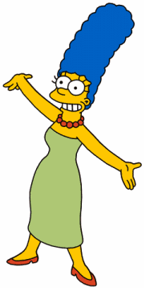

Marge
Creio que a personagem Marge Simpson dispense apresentações, esta é a matriarca da família mais famosa da televisão, Os Simpsons, e apesar de ela aparecer a maioria das vezes como segundo plano na própria série, ainda nos reserva uma personalidade única e que faz um reflexo a dona de casa americana. Durante os primeiros anos tivemos uma apresentação primorosa da personagem, um arco longo que nos mostrou muito de sua persona, neste artigo pretendo fazer um pequeno ensaio de quem a personagem é e foi no passado, também pincelaremos um pouco sobre o rumo da série, a politica desta e arquétipos.
Personalidade
Como já foi citado a personagem é mãe (coisa que ela se orgulha em evidenciar) e dona de casa, podemos
construir duas personalidades para mesma baseado nas temporadas da série, pegarei as 6 primeiras para construir
uma persona, e as mais recentes para construir outra.
Os Simpsons sobreviveram por tantos anos por terem seus personagens como arquétipos, ou seja, eles não possuem arcos
narrativos que atravessam episódios, na concepção da série estes são apenas uma ferramenta de critica ao American Way
of Life. Pode até parecer irônico o que direi, mas o desenho começou como uma das críticas mais ferrenhas a cultura
consumista e de supremacia americana, sendo rapidamente adotado pela cultura punk, fato este que não reverberou através
das temporadas, onde hoje é apenas mais uma série cômica. Isto nos ajuda a diferenciar as duas Marges que serão construídas
neste artigo, vamos começar pela Marge clássica.
O papel da Marge não mudou com os anos, ela ainda é matriarca, dona de casa e uma esposa fiel ao marido, servindo de cola para manter a família em pé. Todavia, quando voltamos ao início da série descobrimos algo que vai além disso, ela é frustrada, e vive sobrecarregada, um claro reflexo a falta de propósito que uma dona de casa vivia no fim dos anos 80, encarrando o seu papel de cabeça baixa e reprimindo seus sentimentos negativos.Podemos notar que a personagem do inicio da série era um retrato mais acido a mulher conformista que enterra sentimentos e esconde preconceitos, mas assim como qualquer outra série que tenha durado tanto como Os Simpsons, a personagem sofreria com o tempo, como a própria série ao todo. Percebemos que nas ultimas temporadas ela preservou o lado conformista, mas tornou-se politicamente correta.
Nas temporadas recentes vemos uma mudança de comportamento da personagem, ela se torna mais correta a fim de fazer contraponto ao Homer, sendo o marido a parte despreocupada que vive uma vida de excessos e loucuras e a mulher o ponto fixo, que lhe trás a realidade. Seria muito fácil encaixar as frustrações passadas da personagem, como uma mulher representando não só o correto, mas alguém humano, com defeitos e pontos fortes. Contudo não é isso que vemos, mais e mais os roteiristas colocam-a em posição de idiota, ou melhor, inocente, vemos isso no recente episódio ao qual ela relembra um conto de sua infância que é baseado na escravidão e ela percebe como hoje aquilo é errado, como se a personagem não tivesse conhecimento dos seus preconceitos passados e fosse apenas corrigida com o tempo. Mas essa evolução não é mostrada, reservando a nós preencher esta lacuna.